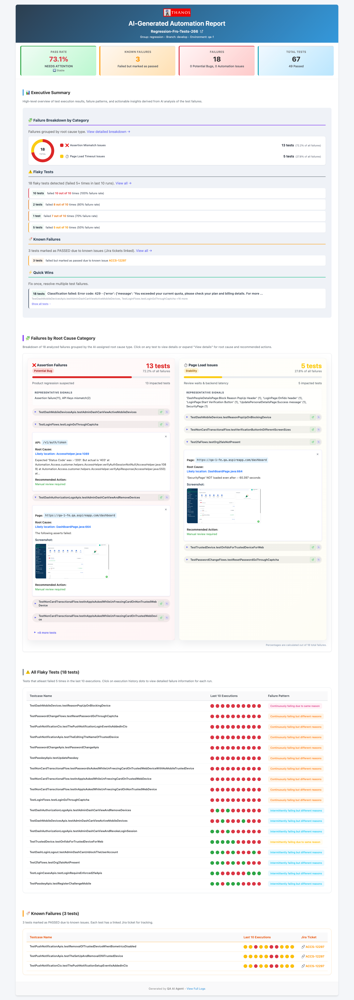

After a CI run with 30 failing tests, someone has to figure out which are product bugs, which are automation issues, and which are flaky. That triage typically takes 1–2 hours per CI cycle and requires someone who knows both the product and the automation framework. The triaging agent does it in minutes — with a built-in adversarial review step between two AI models.
The Problem
CI runs fail. That's expected. What isn't expected is how long it takes to understand why they failed — and what to do about each one.
A typical post-CI triage session looks like: open the HTML report, click into each failure one by one, read the stack trace, check the error message, decide if this is a real product regression or a stale locator, check if this test has been flaky recently, write a summary for the dev team, and try to remember which failures you already looked at. Multiplied by 30 failing tests, that's a morning gone.
The triaging agent replaces this manual process. It runs a 5-step pipeline that scouts unanalysed builds, collects failure data with flakiness history, classifies each failure with Claude Opus, submits that classification to a Claude Sonnet adversarial review, and ships a full HTML report to Slack — all without human involvement.
The 5-Step Pipeline
01_scout.py queries MySQL for build tags that have failures not yet analysed. It scores each candidate by failure count × recency and picks the highest-priority unanalysed build. This step is lightweight — pure database queries, no AI. The agent only moves to the next step when it finds a build worth analysing.
02_collect.py pulls all test failures for the selected build. For each failure it:
- Fetches the complete stack trace and error message from MySQL
- Parses the HTML test report (BeautifulSoup) for screenshots and additional context
- Checks the last N runs to detect flaky tests — a test that passed in 3 of the last 5 runs is flaky, not a real failure
- Computes failure trends — is this test getting worse over time?
03_classify.py batches failures in groups of 10 and calls Claude Opus for each batch. The prompt includes the test name, full stack trace, error message, flakiness data, and trend history. Claude classifies each failure as one of two types:
PRODUCT_BUG — the application behaviour changed: assertion on business logic failed, API returned unexpected status, UI element content changed. AUTOMATION_ISSUE — the test code is wrong: element not found (stale locator), timeout (timing issue), wrong selector, bad assertion logic.
It also assigns a confidence level:
And a root cause category: ELEMENT_NOT_FOUND, TIMING, ASSERTION_FAILURE, ENV_ISSUE, DATA_ISSUE, NETWORK_ERROR, UNKNOWN.
This is the key quality gate. 04_review.py sends the classifier's output to a second Claude instance — Sonnet — acting as an independent reviewer.
The reviewer challenges each classification it disagrees with and provides alternative reasoning. The classifier can rebut or concede. Up to 2 debate rounds per failure. The final verdict is written to a .verdict file. When two models disagree — that's a signal. Low-confidence disagreements are escalated to humans in the final report.
05_ship.py generates a full HTML report, posts it to Slack (#qa-reports or #qa-critical depending on failure severity), and writes handoff JSON to agents/test-healing-agent/queue/ for failures that qualify for auto-healing.
Why two models?
A single model classifying CI failures will make confident mistakes. The error patterns are subtle — a test that fails because of a UI change can look like a product bug if you only read the assertion failure. Running a second model as an independent reviewer with structured debate rounds catches these misclassifications before they reach the report. The disagreement itself is signal worth surfacing to engineers.
The Report

The HTML report is generated by 05_ship.py and includes every section an engineer needs to act on a CI run without looking at raw logs:
- Executive summary — overall pass rate, total failures, breakdown into automation issues vs product bugs. The top-line numbers a manager can read in 10 seconds.
- Failure breakdown by category — donut chart of root cause distribution across the whole build. Useful for spotting patterns: if 80% of failures are
ELEMENT_NOT_FOUND, there was probably a UI refresh. - Failures by root cause category — grouped failures with stack traces and AI reasoning for each classification. Engineers can see why the model made each call.
- Flaky test matrix — test name plus pass/fail pattern across the last 10 runs, visualised as coloured dots. Instant visibility into which tests can't be trusted.
- Known failures — tests that have been failing consistently across multiple builds, flagged as pre-existing rather than new regressions.
What Qualifies for Auto-Healing
Only failures meeting all three criteria are handed to the healing agent. This conservative filter ensures the healing agent only attempts fixes where it has a high probability of success.
Failures that don't qualify still appear in the report — they just don't get auto-fixed. TIMING and ASSERTION_FAILURE issues require human judgement about whether the timeout should be increased or the assertion logic revisited. PRODUCT_BUG failures are routed to the dev team with the full AI reasoning attached.
The handoff to healing
Qualifying failures are written to agents/test-healing-agent/queue/<build-tag>.json. This JSON file contains the failing test class name, method name, error message, and the AI classification reasoning. The healing agent reads this file and processes each failure in sequence — no human in the loop between triage and the first fix attempt.
Next: The Test Healing Agent
See how the agent takes the triaging output, finds the broken locator in the page object, fixes it, verifies with Maven, and raises a GitHub PR — autonomously.